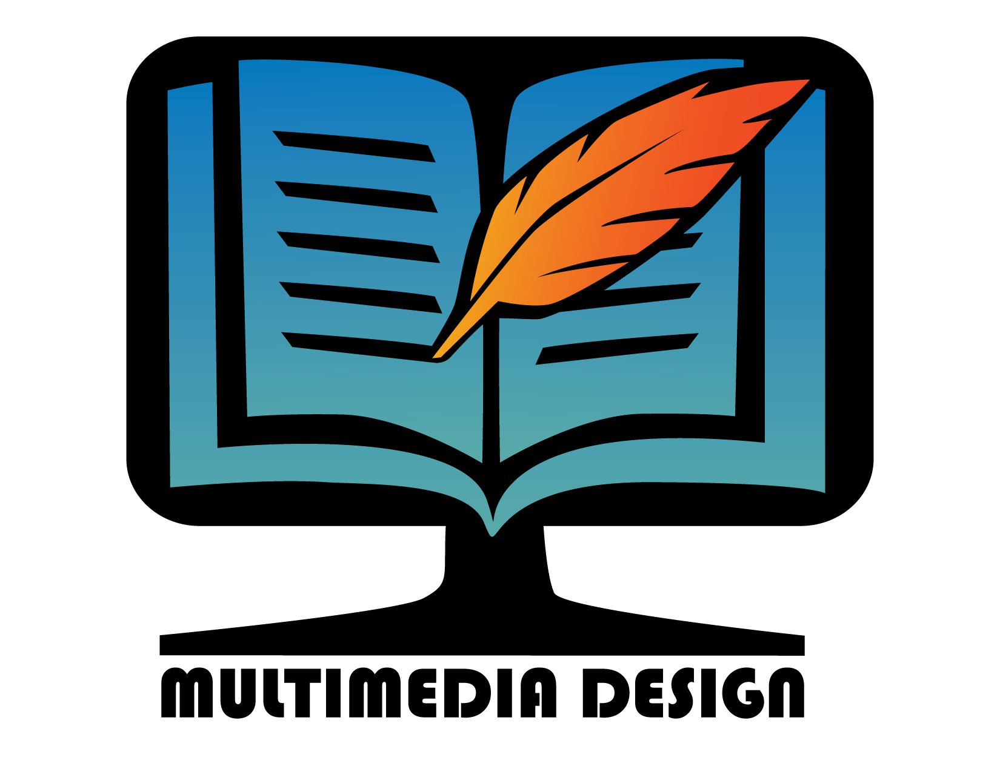
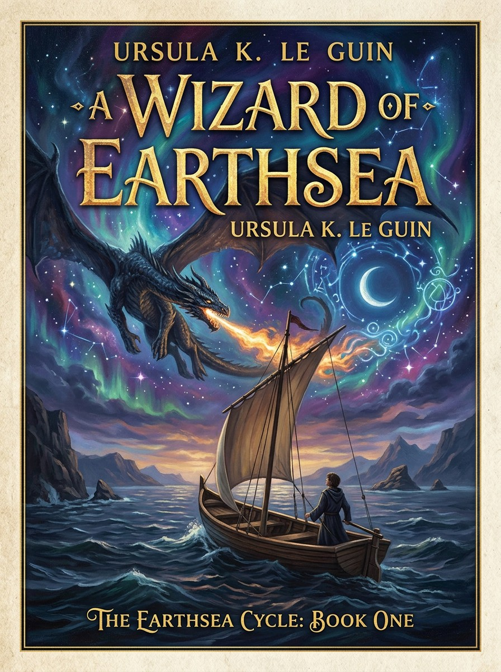

Academic Project · Visual Design
Crafting Visuals
This project explored visual design through two types of digital imagery: vector-based logo design and bitmap-based image composition. I used Adobe Illustrator to create a Multimedia Design logo and Adobe Photoshop to develop a book cover for A Wizard of Earthsea by Ursula K. Le Guin. I also created an AI-generated version of the book cover using Adobe Firefly to compare the two approaches.
Multimedia Design Logo

I used Adobe Illustrator to create a logo that represented the course. I primarily used UF brand colors, with the core orange and Alachua yellow for the quill. The warm colors allow the quill to stand out against the cooler blue and teal.
The design combines a modern computer monitor with a book and quill to represent the integration of multimedia environments and traditional education. I built the monitor, book binding, pages, and writing before adding the quill. I initially tried placing the quill directly over the page, but the page lines showed through the gaps, so I gave the quill its own outline.
I created black, white, and transparent-background versions because the logo's appearance changes depending on the background. The two versions shown here demonstrate how the design works against both light and dark backgrounds. The transparent version is useful in different layouts, although it does not display as clearly in a Word document.
Digital Book Cover: A Wizard of Earthsea

Traditional Design Process
I used Adobe Photoshop and Adobe Stock images to create a book cover for A Wizard of Earthsea by Ursula K. Le Guin. I started with a sailboat at sea and used a layer mask to replace the sky with a more magical scene. The two dragons initially took up too much space, so I masked one out and flipped the remaining dragon's orientation. This allowed it to fill the open space in the sky on the right and created a more balanced composition.
I added an island to represent Earthsea, using another stock image and a layer mask with 50% transparency so the island blended with the water. I placed the island layer behind the sailboat and in front of the sky. I also added whimsical text in the open space over the ocean and right-aligned it to help direct the viewer's eye. The three image styles, realistic, watercolor, and computer-generated, give the cover an eclectic feel that I thought matched the tone of the book.
Reflection: Traditional and AI Design
Working with traditional tools gave me more control over the design. In Illustrator, I could adjust individual vector points and curves to get the shapes I wanted. In Photoshop, I tested different versions of the sky and dragons and rearranged the composition until it felt balanced rather than overcrowded.
For the AI version, I used Adobe Firefly with the prompt: “Generate a book cover for A Wizard of Earthsea that has a sailboat at sea, a dragon, and a magic sky.” Firefly also included the author's name and “The Earthsea Cycle: Book One,” likely because it recognized the book. The AI-generated image gave me a quick starting point and included the main elements from my prompt, but it lacked the artistic judgment and styling I wanted. The result felt over-designed, crowded, and darker than the book's content.
I prefer my own version because I think it better represents the mood and tone of the book. AI can produce options quickly, but getting a result I liked would have required much more back-and-forth prompt engineering and editing. I'm glad I made my own version first because I could develop the composition independently rather than allowing the AI version to influence my choices.